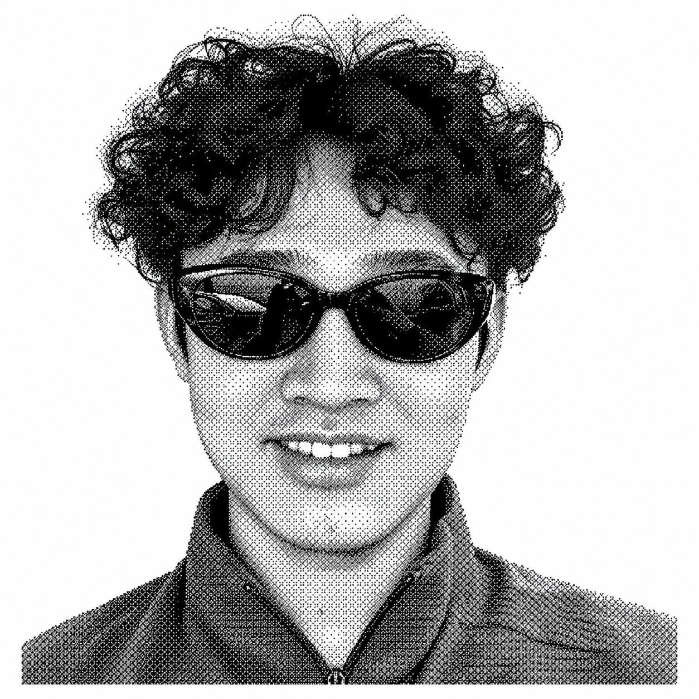

Zhihang Yi (Liam)

My long and painful education:
Undergraduate, College of Computer Science, Sichuan University (2024.9 - 2028.7 expected)
Undergraduate, College of Physics, Sichuan University (2023.9 - 2024.9); transferred to CS
Senior high school student, High School Affiliated to Southwest University (2020.9 - 2023.6)
Junior high school student, Yinxiang Experimental High School of Southwest University (2017.9 - 2020.6)
Primary school student, Chongqing Weiming School (2011.9 - 2017.6)
Kindergartener, Linshui County Government Kindergarten (2008.9 - 2011.6)
I've had (and am still having) a great time as an RA:
Research Assistant, Centre for Photonic Systems, University of Cambridge (2026.8 - present)
Supervisor: Qixiang Cheng
Research Assistant, DICA Lab, Sichuan University (2025.4 - present)
Supervisor: Tao Wang
My interests:
I work on multimodal understanding, fine-grained visual reasoning, and robotics.
I'm a big fan of staying active: working out, playing basketball, hiking, and swimming.
I spend far too much time watching shows like Friends, Game of Thrones, and Stranger Things.
Feel free to reach out about anything except research.
Just kidding. Research is fine too.
Some of my research:
-
Multimodal Information Fusion for Chart Understanding: A Survey of MLLMs—Evolution, Limitations, and Cognitive Enhancement
Zhihang Yi, Jian Zhao, Jiancheng Lv, and Tao Wang.
Information Fusion. -
V-Zero: Answer-Label-Free On-Policy Distillation with Contrastive Evidence Gating for Fine-Grained Visual Reasoning
Haoxiang Sun*, Zhihang Yi*, Langxuan Deng, Yuhao Zhou, Peiqi Jia, Jian Zhao, Li Yuan, Jiancheng Lv, and Tao Wang.
AAAI, under review. (*Equal contribution.)
You can find my work on Google Scholar and GitHub.
My complete CV is available here.
You can reach me at zhihangyi0224@gmail.com.